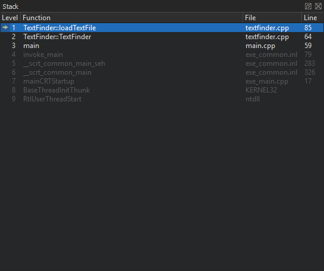

Interacting with the Debugger
You can use the Qt Creator Debug mode to inspect the state of your application while debugging. You can interact with the debugger in several ways, including the following:
- Go through a program line-by-line or instruction-by-instruction.
- Interrupt running programs.
- Set breakpoints.
- Examine the contents of the call stack.
- Examine and modify contents of local and global variables.
- Examine and modify registers and memory contents of the debugged program.
- Examine the list of loaded shared libraries.
- Disassemble sections of code.
Qt Creator displays the raw information provided by the native debuggers in a clear and concise manner with the goal to simplify the debugging process as much as possible without losing the power of the native debuggers.
In addition to the generic IDE functionality provided by stack view, views for locals and expressions, registers, and so on, Qt Creator includes features to make debugging Qt-based applications easy. The debugger plugin understands the internal layout of several Qt classes, for example, QString, the Qt containers, and most importantly QObject (and classes derived from it), as well as most containers of the C++ Standard Library and some GCC extensions. This deeper understanding is used to present objects of such classes in a useful way.
Using the Debugger
In Debug mode, you can use several views to interact with the program you are debugging. The availability of views depends on whether you are debugging C++ or QML. Frequently used views are shown by default and rarely used ones are hidden. To change the default settings, select View > Views, and then select views to display or hide. Alternatively, you can enable or disable views from the context menu of the title bar of any visible debugger view.
You can drag and drop the views in Qt Creator to new positions on the screen. The size and position of views are saved for future sessions. Select View > Views > Reset to Default Layout to reset the views to their original sizes and positions.
To save space on the screen, select View > Views > Automatically Hide View Titlebars.
To show and hide columns in views, toggle Show Column in the context menu.
Once the program starts running under the control of the debugger, it behaves and performs as usual. You can interrupt a running C++ program by selecting Debug > Interrupt. The program is automatically interrupted when a breakpoint is hit.
Once the program stops, Qt Creator:
- Retrieves data representing the call stack at the program's current position.
- Retrieves the contents of local variables.
- Examines Expressions.
- Updates the Registers, Modules, and Disassembler views if you are debugging the C++ based applications.
You can use the Debug mode views to examine the data in more detail.
You can use the following keyboard shortcuts:
- To finish debugging, press Shift+F5.
- To execute a line of code as a whole, press F10 (Command+Shift+O on macOS).
- To step into a function or a subfunction, press F11 (Command+Shift+I on macOS).
- To leave the current function or subfunction, press Shift+F11 (Command+Shift+T on macOS).
- To continue running the program, press F5.
- To run to the line containing the cursor, press Ctrl+F10 (Shift+F8 on macOS).
- To run to the selected function when you are stepping into a nested function, press Ctrl+F6.
It is also possible to continue executing the program until the current function completes or jump to an arbitrary position in the current function.
Stepping Into Code
When using GDB as the debugging backend, you can compress several steps into one step for less noisy debugging. For more information, see Specifying GDB Settings.
The extended GDB settings provide the option to step backwards in code, but this option should be used with care, as it is slow and unstable on the GDB side. For more information, see Specifying Extended GDB Settings.
Customizing Debug Views
You can change the appearance and behavior of the debug views by specifying settings in Options > Debugger. For example, you can:
- Use alternating row colors in debug views.
- Adopt font size changes from the main editor.
- Have tooltips displayed in the main editor while you are debugging.
- Close temporary source and memory views and switch to the previously used Qt Creator mode when the debugger exits.
- Bring Qt Creator to the foreground when the debugged application is interrupted.
For more information, see Specifying Debugger Settings.
Setting Breakpoints
You can associate breakpoints with:
- Source code files and lines
- Functions
- Addresses
- Throwing and catching exceptions
- Executing and forking processes
- Executing some system calls
- Changes in a block of memory at a particular address when a program is running
- Emitting QML signals
- Throwing JavaScript exceptions
The interruption of a program by a breakpoint can be restricted with certain conditions.
Breakpoints come in two varieties: unclaimed and claimed. An unclaimed breakpoint represents a task to interrupt the debugged program and passes the control to you later. It has two states: pending and implanted.
Unclaimed breakpoints are stored as a part of a session and exist independently of whether a program is being debugged or not. They are listed in the Breakpoint Preset view and in the editor using the (Unclaimed Breakpoint) icon, when they refer to a position in code.
When a debugger starts, the debugging backend identifies breakpoints from the set of unclaimed breakpoints that might be handled by the debugged program and claims them for its own exclusive use. Claimed breakpoints are listed in the Breakpoints view of the running debugger. This view only exists while the debugger is running.
When a debugger claims a breakpoint, the unclaimed breakpoint disappears from the Breakpoint Preset view, to appear as a pending breakpoint in the Breakpoints view.
At various times, attempts are made to implant pending breakpoints into the debugged process. Succesfull implantation might create one or more implanted breakpoints, each associated with an actual address in the debugged breakpoint. The implantation might also move a breakpoint marker in the editor from an empty line to the next line for which the actual code was generated, for example. Implanted breakpoint icons don't have the hourglass overlay.
When the debugger ends, its claimed breakpoints, both pending and implanted, will return to the unclaimed state and re-appear in the Breakpoint Preset view.
When an implanted breakpoint is hit during the execution of the debugged program, control is passed back to you. You can then examine the state of the interrupted program, or continue execution either line-by-line or continuously.
Adding Breakpoints
To add breakpoints:
- Add a new breakpoint in one of the following ways:
- In the code editor, click the left margin or press F9 (F8 for macOS) at a particular line you want the program to stop.
- In the Breakpoint Preset view or the Breakpoints view:
- Double-click the empty part of the view.
- Right-click the view, and select Add Breakpoint in the context menu.
- In the Breakpoint type field, select the location in the program code where you want the program to stop. The other options to specify depend on the selected location.
- In the Condition field, set the condition to be evaluated before stopping at the breakpoint if the condition evaluates as true.
- In the Ignore field, specify the number of times that the breakpoint is ignored before the program stops.
- In the Commands field, specify the commands to execute when the program stops; one command on a line. GDB executes the commands in the order in which they are specified.
Specifying Breakpoint Settings
You can specify settings for breakpoints in Tools > Options > Debugger. For more information, see Specifying Debugger Settings.
To use a full absolute path in breakpoints, select the Set breakpoints using a full absolute path check box.
GDB and CDB enable setting breakpoints on source lines for which no code was generated. In such situations, the breakpoint is shifted to the next source code line for which the code was actually generated. To reflect such temporary changes by moving the breakpoint markers in the source code editor, select GDB > Adjust breakpoint locations or CDB > Correct breakpoint location.
When using GDB as backend, you can extend the ordinary GDB breakpoint class by using Python. Select GDB > Use pseudo message tracepoints.
When using CDB as backend, you can specify that the debugger should break on specific events, such as C++ exceptions, thread creation or exit, loading or unloading application modules, or particular output. Select the appropriate check boxes in the CDB > Break on group. To disable first-chance break on access violation exceptions, select the Ignore first chance access violations check box. The second occurrence of an access violation will break into the debugger.
You can automatically add breakpoints on some functions to catch error and warning messages. For more information, see Specifying CDB Settings and Specifying Extended GDB Settings.
For more information on breakpoints, see Breakpoints, Watchpoints, and Catchpoints in GDB documentation.
Moving Breakpoints
To move a breakpoint:
- Drag and drop a breakpoint marker to another line in the text editor.
- In the Breakpoint Preset view or the Breakpoints view, select Edit Selected Breakpoints, and set the line number in the Line number field.
Deleting Breakpoints
To delete breakpoints:
- Click the breakpoint marker in the text editor.
- In the Breakpoint Preset view or the Breakpoints view:
- Select the breakpoint and press Delete.
- Select Delete Selected Breakpoints, Delete Selected Breakpoints, or Delete Breakpoints of File in the context menu.
Enabling and Disabling Breakpoints
To temporarily disable a breakpoint without deleting it and losing associated data like conditions and commands:
- Right-click the breakpoint marker in the text editor and select Disable Breakpoint.
- In the Breakpoint Preset view or the Breakpoints view:
- Select the breakpoint and press Space.
- Select Disable Breakpoint in the context menu.
A hollow breakpoint icon in the text editor and the views indicates a disabled breakpoint. To re-enable a breakpoint, use any of the above methods.
With the notable exception of data breakpoints, breakpoints retain their enabled or disabled state when the debugged program is restarted.
Setting Data Breakpoints
A data breakpoint stops the program when data is read or written at the specified address.
To set a data breakpoint at an address:
- In the Breakpoint Preset or Breakpoints view, select Add Breakpoint in the context menu.
- In the Breakpoint type field, select Break on data access at fixed address.
- In the Address field, specify the address of the memory block.
- Select OK.
If the address is displayed in the Locals or Expressions view, you can select Add Data Breakpoint at Object's Address in the context menu to set the data breakpoint.
Data breakpoints will be disabled when the debugged program exits, as it is unlikely that the used addresses will stay the same at the next program launch. If you really want a data breakpoint to be active again, re-enable it manually.
Viewing Call Stack Trace
When the program being debugged is interrupted, Qt Creator displays the nested function calls leading to the current position as a call stack trace. This stack trace is built up from call stack frames, each representing a particular function. For each function, Qt Creator tries to retrieve the file name and line number of the corresponding source file. This data is shown in the Stack view.

Since the call stack leading to the current position may originate or go through code for which no debug information is available, not all stack frames have corresponding source locations. Stack frames without corresponding source locations are grayed out in the Stack view.
If you click a frame with a known source location, the text editor jumps to the corresponding location and updates the Locals and Expressions views, making it seem like the program was interrupted before entering the function.
To find out which QML file is causing a Qt Quick 2 application to crash, select Load QML Stack in the context menu in the Stack view. The debugger tries to retrieve the JavaScript stack from the stopped executable and prepends the frames to the C++ frames, should it find any. You can click a frame in the QML stack to open the QML file in the editor.
Local Variables and Function Parameters
The Locals view consists of the Locals pane and the Return Value pane (hidden when empty).
Whenever a program stops under the control of the debugger, it retrieves information about the topmost stack frame and displays it in the Locals view. The Locals pane shows information about parameters of the function in that frame as well as the local variables. If the last operation in the debugger was returning from a function after pressing Shift+F11, the Return Value pane displays the value returned by the function.
When using GDB, you can specify whether the dynamic or the static type of objects will be displayed. Select Use dynamic object type for display in the context menu. Keep in mind that choosing the dynamic type might be slower.
Evaluating Expressions
To compute values of arithmetic expressions or function calls, use expression evaluators in the Expressions view. To insert a new expression evaluator, either double-click on an empty part of the Expressions or Locals view, or select Add New Expression Evaluator from the context menu, or drag and drop an expression from the code editor.
Note: Expression evaluators are powerful, but slow down debugger operation significantly. It is advisable to not use them excessively, and to remove unneeded expression evaluators as soon as possible.
Expression evaluators are re-evaluated whenever the current frame changes. Note that functions used in the expressions are called each time, even if they have side-effects.
The QML debugger can evaluate JavaScript expressions.
GDB, LLDB and CDB support the evaluation of simple C and C++ expressions. Functions can be called only if they are actually compiled into the debugged executable or a library used by the executable. Most notably, inlined functions such as most operator[] implementations of standard containers are typically not available.
When using GDB or LLDB as backend, a special ranged syntax can be used to display multiple values with one expression. A sub-expression of form foo[a..b] is split into a sequence of individually evaluated expressions foo[a], ..., foo[b].
Compound variables of struct or class type are displayed as expandable in the view. Expand entries to show all members. Together with the display of value and type, you can examine and traverse the low-level layout of object data.
| Note: |
| GDB and LLDB, and therefore Qt Creator's debugger, also work for optimized builds on Linux and macOS. Optimization can lead to re-ordering of instructions or removal of some local variables, causing the Locals and Expressions view to show unexpected data. |
| The debug information provided by GCC does not include enough information about the time when a variable is initialized. Therefore, Qt Creator can not tell whether the contents of a local variable contains "real data", or "initial noise". If a QObject appears uninitialized, its value is reported as not in scope. Not all uninitialized objects, however, can be recognized as such. |
Note: The set of evaluated expressions is saved in your session.
Inspecting Basic Qt Objects
The Locals and Expressions views also provide access to the most powerful feature of the debugger: comprehensive display of data belonging to Qt's basic objects. For example, in case of QObject, instead of displaying a pointer to some private data structure, you see a list of children, signals and slots.
Similarly, instead of displaying many pointers and integers, Qt Creator's debugger displays the contents of a QHash or QMap in an orderly manner. Also, the debugger displays access data for QFileInfo and provides access to the real contents of QVariant.
Right-click in the Locals or the Expressions view to open a context menu that provides additional options for viewing data. The available options depend on the type of the current items, and are provided by the Debugging Helpers. Typically, string-like data, such as QByteArray and std::string, offer a selection of encodings, as well as the possibility to use a full editor window. Map-like data, such as QMap, QHash, and std::map, offer a compact option using the name column for keys, resulting in a concise display of containers with short keys, such as numbers or short strings. For example, to expand all the values of QMap, select Change Value Display Format > Compact.
You can use the Locals and Expressions view to change the contents of variables of simple data types, for example, int, float, QString and std::string when the program is interrupted. To do so, click the Value column, modify the value with the inplace editor, and press Enter (or Return).
To change the complete contents of QVector or std::vector values, type all values separated by commas into the Value column of the main entry.
You can enable tooltips in the main editor displaying this information. For more information, see See the value of variables in tooltips while debugging.
Directly Interacting with Native Debuggers
In some cases, it is convenient to directly interact with the command line of the native debugger. In Qt Creator, you can use the left pane of the Debugger Log view for that purpose. When you press Ctrl+Enter, the contents of the line under the text cursor are sent directly to the native debugger. Alternatively, you can use the line edit at the bottom of the view. Output is displayed in the right pane of the Debugger Log view.
Note: Usually, you do not need this feature, because Qt Creator provides you with better ways to handle the task. For example, instead of using the GDB print command from the command line, you can evaluate an expression in the Expressions view.
Debugging C++ Based Applications
The following sections describe additional debugging functions that apply only to debugging C++.
Starting the Debugger from the Command Line
You can use the Qt Creator debugger interface from the command line. To attach it to a running process, specify the process ID as a parameter for the -debug option. To examine a core file, specify the file name. Qt Creator executes all the necessary steps, such as searching for the binary that belongs to a core file. To connect to a debug server, specify the server location and port number.
For example:
C:\qtcreator\bin>qtcreator -debug 2000C:\qtcreator\bin>qtcreator -debug core=core.2000C:\qtcreator\bin>qtcreator -debug some.exe,core=coreC:\qtcreator\bin>qtcreator -debug server=some.dot.com:4251
For more information, see Using Command Line Options.
Stepping into Frameworks in macOS
In macOS, external libraries are usually built into so-called Frameworks, which may contain both release and debug versions of the library. When you run applications on the macOS desktop, the release version of Frameworks is used by default. To step into Frameworks, select the Use debug versions of Frameworks option in the project run settings.
Viewing Threads
If a multi-threaded program is interrupted, the Threads view or the combobox named Threads in the debugger status bar can be used to switch from one thread to another. The Stack view adjusts itself accordingly.
Viewing Modules
The Modules view displays information that the debugger plugin has about modules included in the application that is being debugged. A module is a dynamic link library (.dll) in Windows, a shared object (.so) in Linux, and a dynamic shared library (.dylib) in macOS.
In addition, the view displays symbols within the modules and indicates where each module was loaded.
Right-click the view to open a context menu that contains menu items for:
- Updating the module list
- Loading symbols for modules
- Examining modules
- Editing module files
- Showing symbols in modules
- Showing dependencies between modules (Windows only)
By default, the Modules view is hidden.
When using CDB as debug backend, you can specify that the debugger should break when application modules are loaded or unloaded. To enable breaking for the specified modules, select Tools > Options > Debugger > CDB. For more information, see Specifying CDB Settings.
Viewing Source Files
The Source Files view lists all the source files included in the project. If you cannot step into an instruction, you can check whether the source file is actually part of the project, or whether it was compiled elsewhere. The view shows the path to each file in the file system.
Right-click the view to open a context menu that contains menu items for reloading data and opening files.
To enable the debugger to step into the code and display the source code when using a copy of the source tree at a location different from the one at which the libraries were built, you can map source paths to target paths. For more information, see Mapping Source Paths.
By default, the Source Files view is hidden.
Viewing Disassembled Code
The Disassembler view displays disassembled code for the current function.
The Disassembler view is useful for low-level commands for checking single instructions, such as Step Into and Step Over. By default, the Disassembler view is hidden.
To access the Disassembler view, check Debug > Operate by Instruction while the debugger is running. Alternatively, click the  (Operate by Instruction) tool button on the debugger tool bar.
(Operate by Instruction) tool button on the debugger tool bar.
By default, GDB shows AT&T style disassembly. To switch to the Intel style, select Tools > Options > Debugger > GDB > Use Intel style disassembly.
Viewing and Editing Register State
The Registers view displays the current state of the CPU registers. Depending on the CPU type, there will be different registers available. The values of registers that recently have changed are highlighted in red and empty register values as well as leading zeroes are grayed out.
In addition it is possible to edit the content of registers while the program is stopped. This applies to both General-purpose and Special-purpose registers. Registers can be edited in the standard condensed view or in their particular parts if the register is displayed expanded.
By default, the Registers view is hidden.
Specifying Debugger Settings
To specify settings for managing debugger processes, select Tools > Options > Debugger. In the General tab, you can specify settings that are common to all debuggers.

You can customize the appearance and behavior of the debug views, specify settings for breakpoints, and map source paths to target paths.
You can view debug output in the Debugger Log view. However, in some Linux distributions, such as Arch Linux, debug output is sent to the system log. To override this behavior, select the Force logging to console check box. This sets QT_LOGGING_TO_CONSOLE=1 in the environment of the debugged program, which effectively prevents storing debug output in system logs.
Mapping Source Paths
To enable the debugger to step into the code and display the source code when using a copy of the source tree at a location different from the one at which the libraries were built, you can map source paths to target paths.
To automatically map the source paths to a Qt version that has not been patched, select Add Qt Sources and browse to the location of the Qt source files.
To manually map the source paths to target paths:
- In Source Paths Mapping, select Add to add an entry to the path list.
- In the Source path field, specify the source path in the debug information of the executable as reported by the debugger.
- In the Target path field, specify the actual location of the source tree on the local machine.
Specifying GDB Settings
To specify settings for managing the GDB process, select Tools > Options > Debugger > GDB.

To specify a timeout for terminating non-responsive GDB processes, set the number of seconds to wait in the GDB timeout field. The default value of 20 seconds should be sufficient for most applications, but if loading big libraries or listing source files takes much longer than that on slow machines, you should increase the value.
To compress several steps into one step for less noisy debugging when stepping into code, select the Skip known frames when stepping check box. For example, the atomic reference counting code is skipped, and a single Step Into for a signal emission ends up directly in the slot connected to it.
To display a message box as soon as your application receives a signal, such as SIGSEGV, during debugging, select the Show a message box when receiving a signal check box.
GDB allows setting breakpoints on source lines for which no code was generated. In such situations, the breakpoint is shifted to the next source code line for which the code was actually generated. To reflect such temporary changes by moving the breakpoint markers in the source code editor, select the Adjust breakpoint locations check box.
To specify whether the dynamic or the static type of objects will be displayed, select the Use dynamic object type for display check box. Keep in mind that choosing the dynamic type might be slower.
To allow reading the user's default .gdbinit file on debugger startup, select the Load .gdbinit file on startup check box.
To use the default GDB pretty printers installed in your system or linked to the libraries your application uses, select the Load system GDB pretty printers check box.
By default, GDB shows AT&T style disassembly. To switch to the Intel style, select the Use Intel style disassembly check box.
To have GDB automatically save a copy of its symbol index in a cache on disk and retrieve it from there when loading the same binary in the future, select the Use automatic symbol cache check box.
To execute GDB commands after GDB has been started, but before the debugged program is started or attached, and before the debugging helpers are initialized, enter them in the Additional Startup Commands field.
To execute GDB commands after GDB has successfully attached to remote targets, enter them in the Additional Attach Commands field. You can add commands to further set up the target here, such as monitor reset or load.
To execute simple Python commands, prefix them with python. To execute sequences of Python commands spanning multiple lines, prepend the block with python on a separate line, and append end on a separate line. To execute arbitrary Python scripts, use python execfile('/path/to/script.py').
Specifying Extended GDB Settings
To specify extended settings for GBD, select Tools > Options > Debugger > GDB Extended. The settings give access to advanced or experimental functions of GDB. Enabling them may negatively impact your debugging experience, so use them with care.
To use asynchronous mode to control the inferior, select the respective check box.
To add common paths to locations of debug information, such as /usr/src/debug, when starting GDB, select the Use common locations for debug information check box.
To stop when qWarning, qFatal, or abort is called, select the respective check box.
To enable stepping backwards, select the Enable reverse debugging check box. This feature is very slow and unstable on the GDB side. It exhibits unpredictable behavior when going backwards over system calls and is very likely to destroy your debugging session.
To keep debugging all children after a fork, select the Debug all child processes check box.
Specifying CDB Settings
To specify settings for managing the CDB process, select Tools > Options > Debugger > CDB.

You can specify additional arguments for starting CDB in the Additional arguments field.
If a console application does not start up properly in the configured console and the subsequent attach fails, you can diagnose the issue by using CDB's native console. Select the Use CDB console check box to override the console set in the Windows system environment variables. Note that the native console does not prompt on application exit.
To automatically add a breakpoint on the CrtCbgReport() function, select the Stop when CrtCbgReport() is called check box. This catches runtime error messages caused by assert(), for example.
In the Break on group, specify whether the debugger should break on C++ exceptions, on thread creation or exit, on loading or unloading the specified application modules, or on the specified output.
To disable first-chance break on access violation exceptions, select the Ignore first chance access violations check box. The second occurrence of an access violation will break into the debugger.
CDB enables setting breakpoints in comments or on source lines for which no code was generated. In such situations, the breakpoint is shifted to the next source code line for which the code was actually generated. To reflect such temporary changes by moving the breakpoint markers in the source code editor, select the Correct breakpoint location check box. For more information, see Setting Breakpoints.
To use the abstraction layer provided by Python Dumper classes to create a description of data items displayed in the Locals and Expressions views, select the Use Python dumper check box. For more information, see Debugging Helper Implementation.
To add information about first-chance and second-chance exceptions to the Issues output pane, select the check boxes in the Add Exceptions to the Issues View group.
Setting CDB Paths on Windows
To obtain debugging information for the operating system libraries for debugging Windows applications, add the Symbol Server provided by Microsoft to the symbol search path of the debugger:
- Select Tools > Options > Debugger > CDB Paths.
- In the Symbol Paths group, select Insert.
- Select the directory where you want to store the cached information. Use a subfolder in a temporary directory, such as
C:\temp\symbolcache. - Select OK.
Note: Populating the cache might take a long time on a slow network connection.
To use the Source Server infrastructure for fetching missing source files directly from version control or the web, enter the following string in the Source Paths field: srv*.